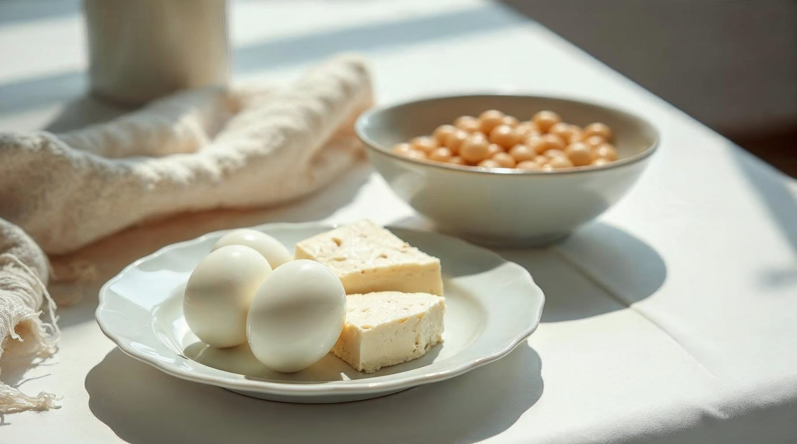
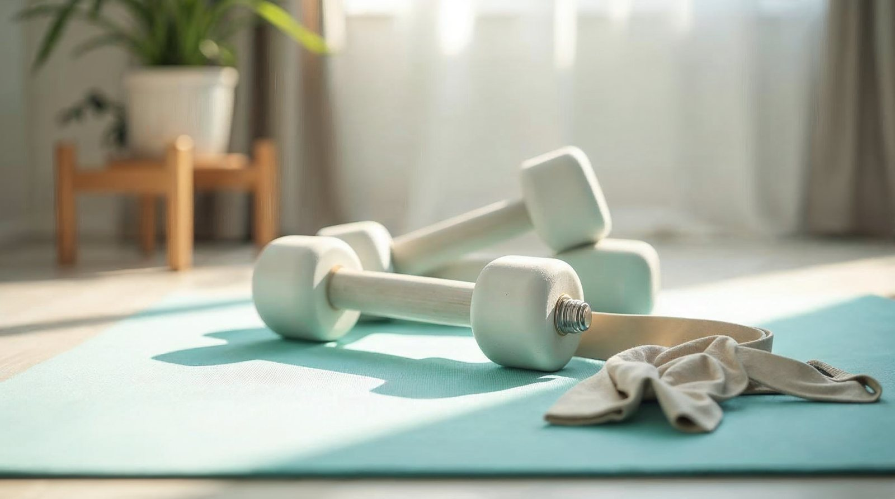
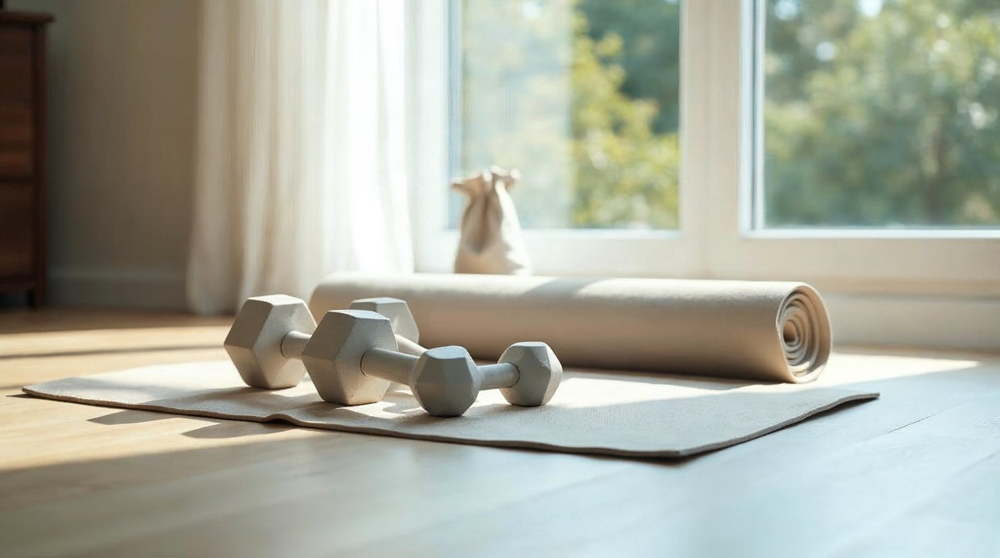
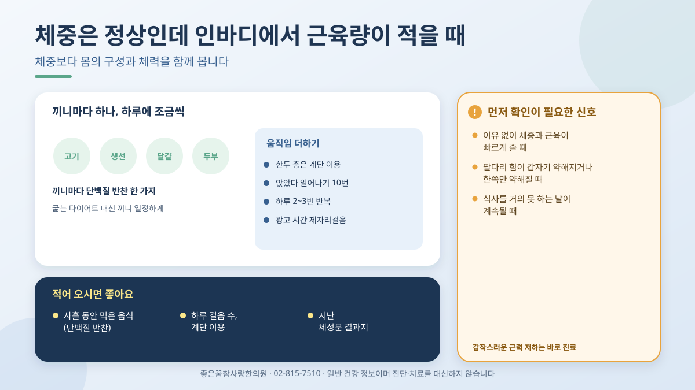

이종호 한의사 감수좋은꿈참사랑한의원 대표원장 (한의사 면허번호 19769)발행 2026-11-23 · 수정 2026-11-26
이 글의 차례
체중이 정상인데 근육량이 적게 나왔다면, 겉으로 보이는 몸무게와 몸의 구성이 다를 수 있다는 뜻입니다. 굶는 다이어트, 오래 앉아 지내는 생활, 끼니마다 부족한 단백질이 겹치면 이런 결과가 나오기 쉬워 식사와 움직임을 함께 살펴보는 것이 먼저입니다.
이 글에서는 이런 결과가 왜 나올 수 있는지, 생활 속에서 근육을 쓰는 일을 어디서부터 시작할지, 어떤 경우에는 생활 관리보다 진찰이 먼저인지 정리했습니다. 근육량의 기준은 나이·성별·키에 따라 달라 이 글에서 숫자로 정하지 않고, 진료 때 인바디 770 결과지의 표준 범위 표시를 함께 보며 설명드립니다.
왜 이런 결과가 나올 수 있나요
- 식사량을 크게 줄이는 다이어트를 반복하면 체지방과 함께 근육도 줄어들 수 있습니다.
- 하루 대부분을 앉아서 보내면 다리와 몸통 근육을 쓸 일이 적어집니다.
- 끼니마다 단백질 반찬이 부족하면 근육을 유지하기 어려울 수 있습니다.
- 나이가 들수록 근육이 줄어드는 경향이 있다고 알려져 있어 중년 이후에는 더 신경 써서 챙기는 것이 좋습니다.
- 다치거나 아파서 한동안 덜 움직인 뒤에는 쓰지 않은 쪽 근육이 먼저 줄어, 부위별 칸에서 좌우나 팔다리 차이로 보이기도 합니다.
- 측정 전 식사·물·운동 조건에 따라 숫자가 조금씩 흔들릴 수 있어, 골격근량 막대가 짧게 나왔더라도 한 번의 결과로 단정하지 않습니다.
먼저 이렇게 여쭙니다
- 하루에 걷거나 몸을 움직이는 시간이 얼마나 되나요?
- 끼니마다 고기, 생선, 달걀, 두부 같은 단백질 반찬을 드시나요?
- 최근 식사량을 크게 줄이거나 다이어트를 한 적이 있나요?
- 쉽게 지치거나 계단에서 다리가 무거운가요?
- 잠은 충분히 주무시나요?

스스로 점검해 보세요
- 의자에서 팔을 짚지 않고 일어나기가 예전보다 힘들다
- 계단 두세 층을 오르면 다리가 먼저 무겁다
- 하루 대부분을 앉아서 보내고 걷는 시간이 짧다
- 아침을 거르거나 끼니를 빵·면으로 간단히 때우는 날이 많다
- 최근 몇 달 사이 식사량을 크게 줄여 체중을 뺀 적이 있다
- 병뚜껑을 열거나 장바구니를 들기가 힘에 부친다
- 오후만 되면 기운이 빠져 눕고 싶다
여러 항목에 해당한다면 식사와 움직임을 함께 점검해 볼 때입니다.
일상에서 먼저 해 볼 수 있는 것
- 끼니마다 단백질 반찬 한 가지 챙기기
- 엘리베이터 대신 한두 층 계단 이용하기
- 의자에서 천천히 앉았다 일어나기를 10번씩 하루 두세 번 해 보기
- 굶는 다이어트 대신 끼니를 일정하게 먹기
- 텔레비전을 볼 때 광고 시간마다 일어나 제자리걸음 하기
처음부터 많이 하려고 하기보다 한 주에 한 가지씩 더하는 방식이 이어 가기 쉽습니다. 예를 들어 첫 주는 아침에 달걀이나 두부 한 가지를 더하고, 둘째 주는 출퇴근길에 한 정거장 걷기를 더하는 식입니다. 무릎이나 허리가 아프다면 움직임을 늘리기 전에 통증 부위를 먼저 진찰받아 보세요.
상황별 예시
- 예를 들어 하루 열 시간 넘게 앉아 공부하는 수험생이라면, 쉬는 시간마다 일어나 계단을 한 층 오르내리거나 의자에서 앉았다 일어나기를 해 보시고, 끼니를 편의점 음식으로 때우는 날에도 달걀이나 우유처럼 단백질이 든 것을 하나 더해 보세요.
- 예를 들어 체중을 줄이려고 저녁을 굶어 온 직장인이라면, 줄어든 체중에 근육도 함께 빠졌을 수 있어 굶던 끼니를 되돌리고 식사 시간을 일정하게 맞추는 데서 시작합니다.
- 예를 들어 무릎이 불편해 바깥 걸음을 줄인 어르신이라면, 무리한 걷기보다 집 안에서 의자를 잡고 발뒤꿈치 들기나 앉았다 일어나기처럼 안전한 동작부터 함께 정하고, 입맛과 소화도 함께 여쭙습니다.
얼마나 지켜보고 언제 상담할까요
- 생활을 바꾼 뒤 한두 주 만에 숫자가 크게 움직이기는 어렵습니다. 몇 주는 기록을 이어 가며 계단이나 앉았다 일어나기가 덜 힘든지 몸의 느낌부터 살펴보세요.
- 한두 달 꾸준히 챙겼는데도 쉽게 지치고 다리가 무거운 느낌이 그대로라면 잠·소화 등 다른 원인도 함께 살필 수 있도록 상담을 받아 보세요. 필요하면 혈액 검사도 권해 드립니다.
- 입맛이 없어 끼니를 거르는 날이 1~2주 넘게 이어진다면 미루지 말고 상담하세요.

한의원에서 함께 살필 수 있는 경우
- 체중보다 체력이 떨어진 느낌이 큰 경우 체성분과 식사·잠의 리듬을 함께 살핍니다.
- 식사량이 적고 쉽게 지치는 경우 소화와 입맛을 함께 살핍니다.
- 운동을 시작하고 싶은데 관절이 걱정되는 경우 통증 부위와 움직임을 함께 살핍니다.
좋은꿈참사랑한의원에서는 모든 분께 맥부터 짚고, 맥을 짚으면서 하루 일과와 식사, 잠을 자세히 여쭙습니다. 혀를 보며 소화와 기력 상태도 살피고, 필요하다고 판단될 때 인바디 770으로 부위별 근육과 체지방을 확인해 결과지의 표준 범위 표시와 함께 설명드립니다.
그다음 식사·활동 계획과 침, 한약 상담 등 맞는 방법을 함께 정하고, 생활에서 시작할 목표는 한두 가지로 좁힙니다. 몇 주 뒤 다시 비교할 항목도 정해 다음 진료 때 이어서 확인합니다.
처음 오시면 접수 때 드시는 약과 몸속 전자 의료기기가 있는지 먼저 말씀해 주세요. 측정 비용이나 보험 적용 여부는 방문 전 전화로 확인해 주세요.

이렇게 기록해 오시면 상담이 쉬워집니다
- 사흘 정도 먹은 음식(특히 단백질 반찬)
- 하루 걸음 수나 계단 이용 횟수
- 쉽게 지치는 시간대와 상황
- 지난 체성분 결과지
이런 증상은 먼저 확인이 필요합니다
- 한쪽 팔다리 힘이 갑자기 빠지거나 말이 어눌해지는 경우, 몇 주 사이 힘이 눈에 띄게 약해지는 경우
- 이유 없이 체중과 근육이 빠르게 줄거나, 식사를 거의 못 하는 날이 이어지는 경우
이런 신호가 있으면 한의원보다 가까운 병원이나 응급실을 먼저 찾으세요.
함께 읽으면 좋은 글
- 다리 힘이 빠지고 걸음이 느려지는 근감소증은 어떻게 살피나요?
- 다이어트를 할 때마다 요요가 오고 정체기에서 멈춰 버릴 때는 무엇을 살피나요?
- 상도동 근처에서 걷기 습관을 만들고 싶을 때는 어떻게 시작하나요?

여쭙는 것
- 하루에 걷거나 몸을 움직이는 시간이 얼마나 되나요?
- 끼니마다 고기, 생선, 달걀, 두부 같은 단백질 반찬을 드시나요?
- 최근 식사량을 크게 줄이거나 다이어트를 한 적이 있나요?
생활에서 해 볼 것
- 끼니마다 단백질 반찬 한 가지 챙기기
- 엘리베이터 대신 한두 층 계단 이용하기
- 의자에서 천천히 앉았다 일어나기를 10번씩 하루 두세 번 해 보기
한의원에서 함께 살필 것
- 체중보다 체력이 떨어진 느낌이 큰 경우 체성분과 식사·잠의 리듬을 함께 살핍니다.
- 식사량이 적고 쉽게 지치는 경우 소화와 입맛을 함께 살핍니다.
- 운동을 시작하고 싶은데 관절이 걱정되는 경우 통증 부위와 움직임을 함께 살핍니다.
먼저 확인이 필요한 신호
- 한쪽 팔다리 힘이 갑자기 빠지거나 말이 어눌해지는 경우, 몇 주 사이 힘이 눈에 띄…
- 이유 없이 체중과 근육이 빠르게 줄거나, 식사를 거의 못 하는 날이 이어지는 경우
한눈에 보는 표
| 구분 | 핵심 |
|---|---|
| 여쭙는 것 | 하루에 걷거나 몸을 움직이는 시간이 얼마나 되나요? 끼니마다 고기, 생선, 달걀, 두부 같은 단백질 반찬을 드시나요? |
| 생활에서 해 볼 것 | 끼니마다 단백질 반찬 한 가지 챙기기 엘리베이터 대신 한두 층 계단 이용하기 |
| 한의원에서 함께 살필 것 | 체중보다 체력이 떨어진 느낌이 큰 경우 체성분과 식사·잠의 리듬을 함께 살핍니다. 식사량이 적고 쉽게 지치는 경우 소화와 입맛을 함께 살핍니다. |
| 먼저 확인이 필요한 신호 | 한쪽 팔다리 힘이 갑자기 빠지거나 말이 어눌해지는 경우, 몇 주 사이 힘이 눈에 띄게 약해지는 경우 이유 없이 체중과 근육이 빠르게 줄거나, 식사를 거의 못 하는 날이 이어지는 경우 |
자주 묻는 질문
근육량은 나이가 들면 당연히 줄어드나요?
줄어드는 경향이 있다고 알려져 있어, 식사와 생활 속 움직임을 꾸준히 챙기는 것이 중요합니다.
헬스장을 꼭 다녀야 하나요?
꼭 그렇지는 않습니다. 걷기, 계단, 의자에서 앉았다 일어나기처럼 생활 속에서 시작할 수 있는 방법부터 함께 찾습니다.
단백질 보충제를 먹어야 하나요?
먼저 끼니의 반찬을 점검해 보는 것을 권합니다. 신장 질환이 있거나 드시는 약이 있다면 보충제는 담당 의사와 상의해 주세요.
근육량이 늘었는지는 얼마 뒤에 다시 보면 되나요?
생활을 바꾼 뒤 몇 주에서 몇 달 간격으로 비슷한 조건에서 다시 재 보면 흐름을 보기 좋습니다.
좋은꿈참사랑한의원은 재진 때 지난번 이야기부터 이어서 여쭙니다. 진료시간과 예약은 오시는 길에서 확인하세요.
어디서 상담받을 수 있나요?
좋은꿈참사랑한의원은 서울 동작구 만양로2길 2 신성빌딩 3층·5층(서울 동작구 상도동, 7호선 상도역 3번 출구 근처)에 있습니다. 한의사 3명(이종호 대표원장, 조영기 수석진료원장, 정원영 진료원장)이 진료합니다. 진료시간은 평일 09:30~20:00(점심 13:00~14:00), 토·일·공휴일 09:30~15:00이며, 방문 전 전화로 확인을 권합니다. 예약은 네이버 예약, 카카오톡 상담, 전화 02-815-7510로 받습니다.
이 글은 일반적인 건강 정보이며 개인의 진단이나 치료를 대신하지 않습니다. 증상이 있거나 복용 중인 약이 있다면 진료를 통해 확인하세요. 치료 효과는 개인마다 다를 수 있습니다.
작성 기준: 일반적으로 알려져 있는 건강 정보를 참고해 정리했습니다(대표원장 감수). 증상 기록은 1~2주 동안 하루 1회, 비슷한 시간에 적어 오시면 지난 상태와 비교하기 쉽습니다.